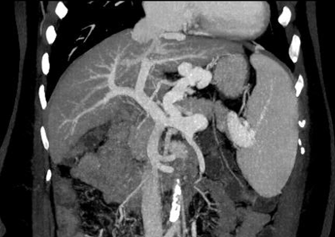
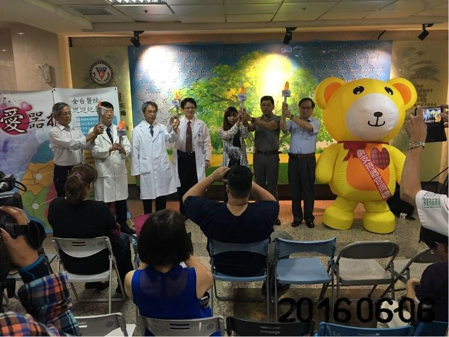

衛教資訊
簡介器官捐贈與移植
移植中心 莊世昌主任
器官捐贈是指一個個體把自身可用的器官，經由手術的方式移植到另一個器官衰竭的病人身上，使他們能夠因得到這個器官而延續生命，並改善生活品質。
器官捐贈的來源有兩種，分別是活體捐贈和屍體捐贈，以目前台灣的法令而言，前者是指健康的成年人，將一顆腎臟或部份肝臟捐贈給五親等以內之血親或配偶。 後者是指腦死病人將可使用的器官(如心臟、肺臟、腎臟、肝臟、胰臟、小腸等)或組織(包括骨骼、眼角膜、皮膚、心瓣膜、血管、氣管、軟骨組織、肌腱、 骨髓等)，甚至四肢，以無償方式捐贈給適合的病患。
至於什麼病人須要考慮器官移植呢? 簡單地說，若是身體器官失去原有的功能，並且持續的惡化到不可逆的衰竭程度，而內外科治療無法獲得改善時， 器官移植手術便是唯一的治療方式。而移植的時機應當是延遲到讓病患有自行穩定或恢復的機會，又要及早到讓手術有適當的成功機會。 由於器官捐贈與移植過程牽涉到整個器官移植團隊的通力合作，包括臨床內外科、影像醫學部、感染科、麻醉科、檢驗部、藥劑部、營養部、 護理部及社會服務室等部門，才能完成這複雜的醫療，因此被認為是評估醫院整體醫療能力的指標之一。
高醫的器官移植起步甚早，在普遍缺乏捐贈者的年代，黃俊雄教授於1990年4月率領團隊完成了高醫第一例屍體腎臟移植手術； 李金德教授於1993年4月完成高醫第一例屍體肝臟移植，同年8月完成高醫第一例活體腎臟移植，之後陸續發展其他器官及形式的移植， 包括心臟移植、活體肝臟移植、胰腎同時移植、血型不相容腎移植及肝移植等等；同時也取得肝臟移植的自審資格，可以第一時間搶救肝臟衰竭的病人。 至今存活最久的肝臟移植病患已超過二十年。
根據財團法人器官捐贈移植登錄中心的統計，目前臺灣約有八千餘病患在等待器官移植，而今年大愛器官捐贈約只有兩百人， 所捐贈出的器官(組織)約七百例，可知等待移植的病患和捐贈者人數相差甚遠，很多病患在無法及時獲得適合的捐贈器官下而失去生命， 因此，這幾年政府及各大醫療團體都在宣導並鼓勵器官捐贈。衛生福利部為感念器官捐贈者及其家屬的無私奉獻，也制定了法則， 讓曾經大愛捐贈器官者之配偶及三親等內血親萬一需要等候器官移植時排序可以優先等候。
捐贈器官是一種延續生命的大愛，藉由現代的移植醫學，讓捐贈者與受贈者之間有了愛的連結，並且生命獲得了延續。
持續心跳 為了再次幫助人
－器官捐贈知多少？
社會服務室 陳冠含社會工作師
三十多歲的年紀，應是人生最多姿多采的階段，卻因騎車自摔導致腦死，年邁的父母忍痛簽下了器官捐贈同意書，姐姐說：「在弟弟車禍之後，意外得知他曾經捐贈骨髓救人， 所以現在他沒有意識，卻還努力的維持著心跳，是因為他希望能再幫助別人一次！至少我們家人這麼相信著!」姐姐的臉上，沒有過多的悲傷，即使因不捨而流淚，她以弟弟為榮。
近年來透過不斷的宣導，讓社會大眾對於器官捐贈有較多的認識，再加上高雄氣爆及新北市八仙樂園塵燃事件，掀起了大家對於皮膚捐贈的討論，也因此讓器官捐贈者人數向上攀升， 而不少宗教界的領袖，亦肯定此善行，其中佛家認為「救人一命勝造七級浮屠」，因而鼓勵信眾將自身的小愛，透過器官捐贈而轉化成大愛。另外，103年10月1日衛生福利部推動 「捨&得之三等親政策」，納入「待移植者之配偶或三親等內血親，曾為死後器官捐贈者具有優先分配權」，更是肯定與鼓勵器官捐贈者之義行及大愛。
「小姐，請問一顆腎臟可以賣多少錢？」早年常會聽到這樣的詢問。依據「人體器官移植條例第12條」規定：「任何人提供或取得移植之器官，應以無償方式為之。」 因此腦死(大愛)器官捐贈，是指當ㄧ個人腦死時，基於個人的意願或法定最近親屬的同意，以無償的方式，將其可用的器官及組織，無償捐贈給需要的病人。
但腦死器官捐贈真有那麼容易嗎？依據「財團法人器官捐贈移植登錄中心」統計，平均每年腦死器官捐贈者僅約2百多人，常有人問：「每天那麼多人過世，為什麼捐贈者這麼少啊？」 當然，捐贈意願是首要因素，再者，病人需經過兩次嚴謹的腦死判定後，才能進行器官捐贈，而每一位往生者的死亡過程，並不一定會經過腦死階段，因此積極推動器官捐贈理念， 讓社會大眾能認同及接受，才能進一步提升捐贈意願。
除了腦死後捐贈器官，「人體器官移植條例第8條」亦允許配偶、五親等內血親或姻親之活體器官捐贈，但對於捐贈者與受贈者須進行嚴謹的醫療、精神、社會心理、親屬關係評估。 「捐贈者的意願」則是評估重點，活體器官捐贈，須排除捐贈者被強迫或利誘的情況下，才會成立。
經由上述的介紹，您對於器官捐贈的理念、現況及政府政策法令等，已有些認識了嗎？ 「器官捐贈、遺愛人間」是個大痛大愛的決定過程，需要您的認同與參與。
高醫移植大紀事
移植中心 郭佩青 護理師
12月5月上午10時將器官捐贈者送入開刀房，終告段落，結束一天ㄧ夜的工作，但另一任務正等著我：小港醫院剛轉來第二位器捐者，家屬決定將悲傷化為大愛， 同意將家人的器官遺愛人間，於是，一天ㄧ夜的接力賽再次開始了。
病患轉入加護病房後開始器捐流程作業：安排二次腦死判定、照會各相關科評估器官功能、安排心臟、肝臟、腎臟超音波、抽血實驗室檢驗… 。 經過二位神經內外科醫師二次專業審慎的腦死判定及器官功能評估後，確定可成為器官捐贈者，遂將捐者資料登錄於衛生署委託「財團法人器官捐贈移植登錄中心」 之電腦器官分配系統進行分配，心臟、肝臟、腎臟及眼角膜等器官均分配到本院。
12月6日是個大日子，全院移植團隊總動員，本院進行了心臟、肝臟、腎臟、眼角膜的摘取及移植手術，由白天的摘取手術隨即進行移植手術到夜間， 以及隔日術後加護病房照護，動員了眾多人力資源，各移植內外科團隊、開刀房、麻醉科、檢驗部、護理部、藥劑部、營養部…，可謂本院移植有史以來的最大陣仗！
此次移植每位病患在團隊的用心照顧下術後狀況良好，目前皆已出院門診追蹤。
感謝所有參與器官捐贈移植的醫療人員、社服人員，因為您們的付出，使病患獲得最佳的醫療照護品質。
感恩每位捐贈者及家屬，您們無私的奉獻讓另一個人得以重生，得以展開新的人生，迎向未來。
從醫者的快樂
口述/ 泌尿科名譽教授 黃俊雄
特約撰寫/劉盈慧
我是鹿港孩子，但在高醫落地生根，一輩子隨著高醫一起長大。
考大學那年，我曾動念想選化工系，但我的父母就希望我唸醫學院，總是應了民間流傳的那句話：「第一賣冰、第二做醫生」。那時台灣醫學院不多， 高醫是僅次於台大的第二志願，也是第一所私立醫學院，更是杜聰明博士所創辦的學校，因此我慕名而來。當然和現在比起來，早年高醫的環境差太多了， 只有四棟建築，沒有圍牆，許多初來乍到的新生都會誤走到隔壁的第九中學(現在的三民高中)報到，因為中學的教室建築還比較高呢。
就在這個不亮眼的地方，我卻享受了愉快的求學生涯。醫學教育不好唸，但我還算得心應手，只有大體解剖課這種需要一板一眼硬記人體大小骨骼器官與肌肉的課程讓我吃點苦頭， 想來我更喜歡的是醫學教育中對生理和病理現象總有原因可以解釋的邏輯吧。學生時代的我真正自豪的是在運動場上，也許是早年通車上學需要走長路的訓練， 讓我保持有不錯的腳力，因此到了大學運動會，我還拿過賽跑第一名的佳績，同時熱衷參與球隊活動。
我後來發現這樣的喜好對從醫者頗有助益，畢竟我們需要體力應對長時間的門診工作，進到開刀房更是要做完才下來，沒有中途放棄的權力， 此時就需要良好的體力當後盾支持我們從醫者完成手上的任務。我印象中最大的體力考驗就發生在赴法國研習器官移植技術的那年， 有天我隨法國團隊於中午搭飛機赴外地醫院摘取肝臟器官後，急速返回原醫院進行移植手術，這刀一開下去居然是到了凌晨六點才能下來休息。
從醫之路就是這樣，非常累但我們還是要盡力做我們能做的，當病人把他的問題帶到你眼前，你就是要幫他解決；病人把他的性命交在你的手上， 你要讓他的生命有個新的開始。當你做到這一點，你就能獲得無比的快樂。就曾有這樣一位年輕患者給了我這樣的喜悅，她是二十幾歲的年輕女性， 因腎臟血管過窄導致高血壓問題嚴重，在還沒有血管擴張技術前，我們採用的方式是進開刀房切除過窄的血管部位，再將正常的兩端接起來， 血液順利流通就解決高血壓問題。這個女孩子出院後寄卡片給我，用端正的字跡寫：「謝謝黃醫師，你讓我在20歲這年重生了。」
印象更深的是在我還是住院醫師時發生的事，那是過年前夕的夜晚，我住在醫師宿舍中，突然有人敲我的門，我開門一看是一位提著一袋禮盒的中年男子。 他自我介紹說他代表父親前來，他的父親已經過世，但在往生前千叮嚀萬交代要兒子去找那位住院時照顧他的醫生。「謝謝你對我父親那麼細心的照顧。」他很慎重的說。
就是這樣的溫暖回饋給我自信、幫助我成為一個更好的醫師、鼓勵我要繼續走下去。於是我一路在醫院服務外，也在高雄醫學大學內帶領後進者，不敢說有多大的建樹， 但也歷任了好幾個行政職務，包括醫學系系主任和醫學院院長等等。帶領過的學生目前多數也升到了主任階層，算是桃李滿天下了。在職場上我也秉持孜孜矻矻的信念， 與泌尿科同仁一起努力，除了與腎臟內科等其他專科合作，將高醫的器官移植手術從零開始建立，如今成功的手術已超過一百多例，更鼓勵女性醫師走入泌尿專科， 如今已有五位的泌尿科女醫師在高醫體系內服務。凡此種種都是讓我自豪之事。
我的人生算是都給了醫學之路，我在高醫求學，我的太太和我是同班同學，從醫時忙碌起來也曾將小孩委託丈母照顧，我只能在週末見到他們，在白袍之下， 我的生活相對簡單，當父親勸我出去開業時，我跟他說：「錢夠用就好」，所以這輩子我只在高醫服務，不曾有自己的診所；也曾有人到家裡來拜訪， 半開玩笑的說：「一個院長怎麼住這樣小的房子？」我還是說：「錢夠用就好」。也許我無法為孩子們留下大量的金錢，但幸運的是透過身教， 我能展現給孩子們看一個從醫師者心靈富足的平穩生活，因此我的三個兒子在耳濡目染之下也陸續走上同一條路成為醫師。
秉持這樣的人生信念，穿上白袍這一路來，我盡力做我能做的，一步一腳印。在我眼中病情沒有輕重之分，每個都很重要，對我來說幫一個人器官移植的重要性， 就和為一個患者疏通尿道的重要性是一樣的：你或許給了前者一個新的人生，但當你見到後者苦苦憋尿許久後終於能排尿時那舒了一大口氣的表情，你就會知道那種喜悅是一樣的。 只要能解除患者的苦痛，就是一個名醫者最大的成就與快樂。
移植後的感染可怕嗎？
感染內科 盧柏樑主任
應該沒有人不擔心移植後的感染，因為接受器官移植者需要使用免疫抑制劑來降低移植器官發生排斥的機率，因此除了承受手術相關感染風險外， 也需要面對伺機性感染的威脅，包括：病毒、細菌及黴菌等伺機性感染。這會影響到器官移植的成敗，也威脅器官受贈者的生命，因此在感染的預防、 診斷與治療是非常重要的。
器官移植的感染，可區分三個階段：分別為移植後的第一個月(早期)、第二至第六個月(中期)及移植後超過第六個月 (後期)。 這三個時期應該特別注意的致病菌與感染症並不相同，所以要依病人移植後的病程來鑑別診斷與治療感染症。
移植術後的感染第一個月內與術後併發症有關，包含細菌及念珠菌傷口感染、肺炎、泌尿道感染、血管導管相關菌血症、引流管相關感染及抗生素相關腸炎等。 這些感染與一般外科手術患者術後感染症較相似。此外，也需小心單純性皰疹病毒的活化。
移植後第2-6個月，伺機性病原如巨細胞病毒、肺孢子囊蟲、麴菌等一般健康人雖感染但不易發病的病原菌，就可以在使用高劑量的免疫抑制劑的病人身上造成疾病， 除了以上三種，還有一些更少見的伺機性感染，需小心注意各種症狀，詳細診斷。
在移植6個月之後，移植受贈者免疫功能已有改善，此時會發生的感染症就跟一般大眾相似，如：流行性感冒病毒感染、細菌性泌尿道感染及肺炎等。
為了減少各種移植後感染的發生，器官移植受贈者一定要配合移植前安排的各種篩檢，可用疫苗預防的疾病也都要依醫師建議進行疫苗施打。 醫師會依照器官捐贈者與受贈者的各種病毒抗體的狀況，如Ｂ型肝炎抗體之有無、巨細胞抗體之有無等，來評估移植前中後期是否需要給予預防性投藥。
器官移植後，無可避免的需長期使用免疫抑制劑，除一般常見感染症外，還要小心伺機性的病原菌感染。術前詳細評估捐贈者及受贈者存在或潛在感染， 提供必要的疫苗與預防性抗細菌藥、抗黴菌藥、抗病毒藥，在術後嚴防嚴重感染及併發症，這是保護器官移植受贈者一定要做的事。醫療團隊、 病人與關心的家屬皆應知其風險，並全力做好感染管制，這是成功的器官移植不可或缺的要素。
移植新紀錄--2天等到肝
移植中心 郭佩青 護理師
2月18日蘋果日報等各大報以「2天等到肝、幸運男重生」、「高醫肝臟移植、45天三例破紀錄」等標題大幅報導高醫肝臟移植案例，此病例只等候二天，堪稱全國最幸運的換肝人。
由於病患為C型肝炎合併肝硬化、黃疸、嚴重腹水、肝性腦病變，MELD Score( Model End Stage Liver Disease )：27分，屬於急迫性肝臟移植手術者， 遂將病患資料送健保事前審查，通過後登錄於衛生署登錄系統進入全國等候名單。兩天後，本院有位腦死病患家屬做出大愛的決定－器官捐贈， 在取得家屬同意書後進入器官捐贈移植流程，從器官評估檢查、腦死判定、捐贈者照護直到進入登錄系統進行器官分配，赫然發現肝臟配對名單排序第一名竟是等候兩天的李先生， 因當時全國並無同血型之猛爆性肝衰竭優先分配等級一的等肝者，所以第一順位就是分配到本院疾病嚴重度高分的李先生，真是幸運啊！而李先生在醫療團隊悉心照顧下， 三個星期後順利出院，準備迎接新的人生。
自去年底至今年1月底，高醫又締造了一項紀錄：40天內四位器官捐贈者；本院成功進行了三例肝臟移植、六例腎臟移植，可謂創造了另一頁高醫移植醫學的紀錄。
在此感謝所有參與器官捐贈移植的醫療人員、社服人員，因為您們的付出，使病患獲得最佳的醫療照護品質。
感恩每位捐贈者及家屬，您們無私的奉獻讓另一個人得以重生，得以展開新的人生，迎向未來。
移植團隊中的影像醫學
影像醫學部 黃郁玲主治醫師
影像醫學部在移植團隊中是一顆重要的螺絲，扮演團隊中「眼睛」的角色。從手術前一系列的影像診斷，到手術中超音波評估，以及術後各階段的追蹤， 提供充足的資訊，讓臨床科醫師免於瞎子摸象的困境。
孫子兵法有云：「勝乃不殆；知天知地，勝乃可全。」在進行移植手術前，影像醫學醫師利用超音波（sonography）、電腦斷層（computed tomography） 及磁振造影（magnetic resonance imaging）等醫學影像工具的幫忙，在術前幫助移植團隊了解受贈者及捐贈者身體狀況。超音波能獲知主要血管的血行動力學， 尤其在肝硬化病人的肝門靜脈高壓等影響手術至深的因子。高階電腦斷層搭配影像後處理的工作站及軟體，能將病人的影像做深入的分析，如在肝臟移植方面， 受贈者及捐贈者的肝動脈、肝門靜脈、肝靜脈可利用不同的掃描條件及後處理的技術來進一步了解是否有變異，並可用影像分析軟體來計算肝臟體積。 如此一來在術前團隊討論中能整合各科醫師的意見來制定開刀計畫。而核磁共振檢查主要能評估膽道系統，對外科醫師術前模擬術中膽管的吻合幫助很大。
另外在某些臟器移植手術中，影像醫學部也需要提供即時的超音波評估血管及X光檢查。在執刀醫師完成血管吻合後，利用杜卜勒超音波（Doppler ultrasound） 來評估主要血管的血流狀況。若血流狀況及臟器灌注不盡理想，將影響移植肝臟的功能，必須立即由執刀的外科醫師將血管稍加調整角度甚至重新吻合， 並反覆利用杜卜勒超音波檢查灌流，直至灌流量合理。
而移植術後更需要影像醫學的協助，除了術後頭幾天在加護病房內密集的超音波追蹤之外，穩定期之後移植病人仍須接受定期的影像檢查及評估； 除了利用影像工具，提供移植資訊外，在術後若血液灌流不盡理想，可以置放血管內支架加以改善；若膽管吻合處狹窄或滲漏， 則有置放膽管內引流或體外引流管等方法。
影像醫學部在移植團隊中為臨床醫師的後盾，也希望能提供給臨床醫師及病人更多更好更精確的服務及幫忙!

利用Maximum intensity projection (MIP)重組技術，可將受檢者肝門靜脈系統及周邊的靜脈曲張清楚表現出來。
移植團隊裡的串聯者
－認識器官移植協調師
移植中心 郭佩青護理師
器官移植協調師(transplant coordinator) 最早出現於1962年美國，負責移植病患相關實驗室檢查資料的彙整； 1988年根據移植流程不同的任務， 再細分為臨床器官移植協調師(clinical transplant coordinators)、器官移植勸募協調師(procurement transplant coordinators)、器官移植保存師 (transplant preservationists)、及臨床器官移植護理師(clinical transplant nurse)。日本則依據照護對象不同，分為器官捐贈協調師(donor coordinator) 與器官受贈協調師(recipient coordinator)。
台灣器官移植協調師則於1988年台大醫院開始設置；目前全國臨床實務之協調師(含護理師及社工師)約有80多人，其角色職務，則依各醫院運作模式分成兩種， 一為器官移植協調師身兼器官捐贈及器官移植之協調師，如成大、三總、榮總、慈濟體系及本醫院；另一則是將協調師區分為器官勸募協調師(護理師或社工師擔任) 以及器官移植協調師(護理師或專科護理師擔任)，如台大、彰基及長庚體系醫院。
台灣大學胡尹齡等人定義移植協調師的角色為:「健康照護人員，負責器官捐贈者與受贈者資料的取得、確認與統整建檔； 協助醫療團隊提供器官捐贈家庭及受贈家庭之術前術後照護；協調院內移植團隊與其他科部間之移植業務，擔任院際移植器官分配、運轉的聯絡人； 辦理醫院及社區的器官捐贈宣導活動，並於其專業上積極自我成長。」
2011年台大愛滋器官誤植事件後，衛生主管機關開始重視移植協調人員的專業訓練及專業認證問題，因此委託「財團法人器官捐贈移植登錄中心」 （以下簡稱登錄中心）研擬專業訓練及辦理認證考試相關事宜，衛福部也於各器官之摘取移植醫院資格申請中規定:須有專任之移植協調員， 移植協調人員應提供醫事人員證書影本、學經歷證明文件及登錄中心移植協調人員資格認證核心課程及考試及格證書等。
期盼經由衛生主管機關的政策，醫院管理階層及專業團體的協助，建置標準化的訓練及認證制度，提升器官移植協調師 (transplant coordinator)的專業能力與服務品質，創造更安全與人性關懷的器官移植環境，造福更多器官捐贈者與受惠者及其家人。
註: 筆者現為器官捐贈移植協調人員認證試務委員會委員。

05年6月6日「619愛恆久-大愛薪傳說感謝」
器官捐贈紀念月全台醫院巡迴紀念活動
認識器官捐贈之特性
社會服務室 陳武宗 主任
器官捐贈與移植是一項涉及科技、法律、社會、經濟、倫理及人性等層面的議題。本文擬整理參與器官勸募和移植醫療團隊運作的經驗，簡述器捐之特性，以供參考：
一、合法性
我國「人體器官移植條例」自七十六年公佈實施以來，雖因社會發展與醫療實踐經驗經歷幾次的修法，但整體面而言，本法之立法完成與實行， 已為國內器捐與移植的推展奠定了法律基礎。因此，參與器捐之相關人員，必須對本法律的立法精神與規定有所瞭解，才能避免無謂的角色與認知上的衝突。
二、衝突性
國內器捐的來源，以意外事故造成頭部嚴重外傷或相關腦部疾病患者居多，站在家屬「大痛」的立場，欲告知其親人在醫學上已無挽救的可能且成腦死狀態， 同時提出器官捐贈遺愛人間「大捨」的行為，決策的過程常是家屬內心十分矛盾與掙扎的時刻，因此參與醫療說明與勸募的人員必須深刻理解捐贈者家屬的複雜心情， 建立信任之醫病關係，提供必要的諮詢與協助，讓其做出最佳與不悔的決定。
三、利他性
移植醫學的發展，若無捐獻者的「遺愛人間」，若無親屬「大痛大愛」、「無私奉獻」的精神與決定，勢必難以進展，而移植醫師空有良好的醫術， 也難以發揮救人活命的專長與使命。尤其在功利之風盛行的當前社會，每位捐獻者及其親屬的無私奉獻之利他行為，更令人感佩不已。
四、倫理性
器捐工作常涉及十分複雜的倫理困境，如「器官能否公平與合理的分配給最需要的人」、「潛在器官捐贈者能否獲得應有的醫療協助，且何時被判定為腦死」等等。 因此參與其中的醫療團隊成員，除須有系統的累積經驗與有效的分享外，在面對每一件移植案例特殊的層面，必須有更彈性的應變和符合法律與倫理思維的整合能力。
五、科學性
移植醫學的發展是項高成本與高科技的醫療服務，因此，如何在醫療科學的原則下，進行潛在器官捐贈者的評估與腦死鑑定、移植過程所需的技術與藥物， 及移植後器官受惠者長期的追蹤治療，都必須建立在符合臨床醫學的標準和科學知識的基礎上，避免資源不當的分配與應用。
六、時效性
器捐是具有高度壓力與重視時效性的工作，從潛在器捐者的發現、勸募的進行、腦死判定的完成、器官的摘取與合理分配及器官的移植等等， 皆是在十分緊急的狀況下進行。因此，擔任協調人須掌握器捐過程的關鍵重點，同時在有限的時間，發揮統合機構內外的相關人員， 並適時對突發狀況採取有效的應變措施，才能夠使每一件器捐工作圓滿完成。
七、團隊合作性
器捐是一項高度分工及需要機構內外人員密切合作的醫療服務工作，參與的人員如潛在器官捐贈者的主治醫師、護理人員、符合腦判鑑定的腦科醫師 、檢警人員、社工師等等，從潛在器贈者的發現開始，上述單位的相關人員就處在密切互動與合作的狀態下，直到器官順利的移植到需要的患者身上， 完成器捐者家屬的承諾，身心才可歇息。
若能認識上述器捐工作的特性，其實每件器捐任務的完成，應是十分人性與自然的過程，且可讓捐贈與受惠雙方兩平安。
器官捐贈 生命再現
移植中心 李金德 主任
「器官移植」是器官衰竭病患，經過內科、外科治療後，仍無法維持基本功能，且有致命合併症產生的唯一治療方法。
根據2002年統計，西班牙器官捐贈數為每百萬人33.7人，居世界之冠。美國每百萬人22人，歐洲每百萬人15人，台灣每百萬人5.1人。 由於社會文化、宗教、歷史的因素，據統計台灣每年只有一百餘人捐贈器官，等待器官移植的病患約有六千人，除了洗腎病人外， 其餘器官之等待者，往往在期盼中漸漸失去生命，這也是器官移植所面臨之最大問題與挑戰。所以政府設置「財團法人器官捐贈移植登錄中心」 ，建置器官勸募網絡，來提昇國人器官捐贈勸募率及器官移植成功率，此外肝臟及腎臟之活體移植手術亦逐漸被接受。
本院於民國55年開始進行眼角膜移植，民國79年開始腎臟移植，民國82年開始肝臟移植，93年8月成立移植中心，並積極籌備發展心臟、 肺臟移植及活體肝臟、腎臟移植，現已成為國內器官移植及合作勸募醫學中心之一，除大力提倡器官捐贈大愛外，並推動移植醫學之服務、 研究、教學，使器官衰竭病患能得到最適切的治療。
近年來由於免疫抑制劑的發展，使器官移植術後病人存活率大大提昇，目前腎臟移植一年存活率為96﹪，肝臟移植一年存活率為86﹪， 心臟移植一年存活率為85﹪，肺臟移植一年存活率為77﹪，台灣的器官移植水準也不遜於先進國家。然而器官移植乃高風險手術， 受贈者需終身服用抗排斥藥物，所以術前專業的移植團隊評估，術後病患與家屬的配合，按時服藥、定期追蹤、自我照顧都是非常重要的。
期待由本專刊的發行，使社會大眾能多一份思考器官捐贈、使生命流傳下去的偉大意義，也希望每一位受病痛之苦的病友及家屬能夠鼓起勇氣接受移植手術， 為自己及家人帶來嶄新的人生。
再生緣--
活體器官移植之社會心理評估
社會服務室 陳冠含 社工員
還記得中華奧運棒球隊徐生明總教練換腎的新聞嗎？九十三年底，中華奧運棒球隊返抵國門，徐總教練因連日來身體不適從機場直奔醫院， 後來傳出醫師建議徐總教練進行腎臟移植的消息，引起各界ㄧ片譁然，不少球迷表達捐腎意願，最後經過組織配對，由徐總教練胞弟捐贈一枚腎臟， 幾個月後徐總教練重返球場，為棒球界保住了重要的指標性人物。
台灣於一九八七年通過人體器官移植條例，人體器官移植條例第八條內容雖允許活體器官捐贈，但對於捐贈者與受贈者須進行嚴謹的醫療、精神心理、社會心理、 親屬關係評估；其中，受贈者與捐贈者的親等關係是首要的評估要項，兩者必須為五親等內之血親或姻親，而活體肝臟移植的親等規定又更為嚴謹。或許大家想問， 為什麼ㄧ定要五親等內的親屬關係才能做活體器官捐贈？那是為了避免買賣器官。難道親屬就不會涉及買賣嗎？我們不排除這樣的可能，但我們選擇相信親屬間的「捐贈」 意願應該會比陌生人間的「捐贈」意願來的高，但為了慎重起見，在進行活體器官捐贈移植前還是必須由團隊進行嚴謹的評估，杜絕器官買賣的情況。
在確認親等關係符合規定後，另一項評估重點即「捐贈者的意願」，當捐贈者為非自願時，移植醫療團隊需尋求可行的說法，告知受贈者不適合做活體移植的原因， 例如配對不符，以保護捐贈者真正的意願。捐贈者同意與否在法律上稱之為自我決定權，必須成年人才能行使此權利，且須在捐贈者非被強迫、非被利誘的情況下才成立。 試想，如果你被強迫或你強迫自己去做某件你不想做的事，且結果不如你所預期，你會不會埋怨自己或他人當初的決定？活體器官移植是一項重大的醫療處置， 它須花費的代價遠高於其他的醫療方式，而且除了捐贈者與受贈者之外，它的成敗亦會影響兩個家庭，甚至是兩個大家族，因此為了避免浪費醫療資源或造成家庭紛爭， 捐贈者的意願是醫療團隊決定進行移植手術的重要依據。
雖然簽署器官捐贈卡的人數日增，但國人對於器官捐贈的接受度仍然有限，在進行器官勸募時，常遇到的困境包括家屬情感上的不捨、傳統要保留全屍的觀念…等， 因此腦死器官捐贈的來源有限，若要完全仰賴腦死器官移植，受贈者恐怕得遙遙無期的等待，甚至到生命殆盡也等不到一個腦死器官，在這種供需失衡的情況下， 「活體器官移植」燃起了等待者的一線生機，很多人甚至不惜代價，只為了能夠做活體器官移植，為了避免各種不適當獲取活體器官的行徑， 人體器官移植條例中對於活體器官移植的規定相當繁複，器官移植醫療團隊也須採行高標準的醫療與社會心理評估，以確保在最公平、正義的狀態下進行活體器官移植， 並有效保護捐贈者與受贈者，也讓彼此能夠更珍惜得來不易的緣分—生命的延續。